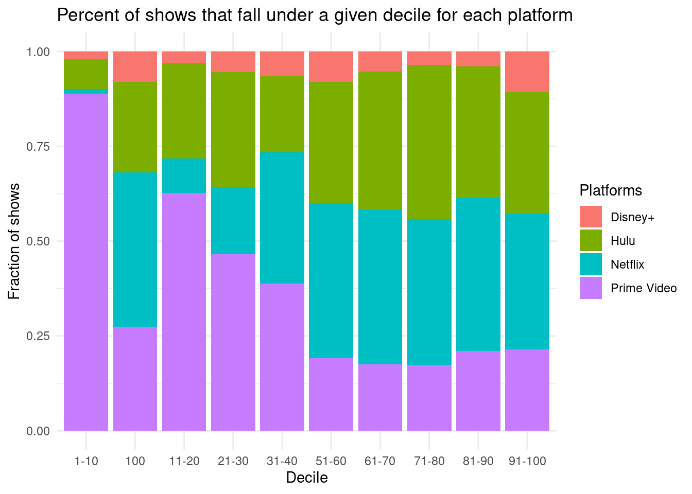

What streaming platform presents the highest-ranked television shows produced in the last century?
We define “highest-ranked” as shows with the highest Rotten Tomatoes ranking
The streaming platforms we are analyzing are Disney+, Netflix, Hulu, and Prime Video.
Data collection and cleaning
Have an initial draft of your data cleaning appendix. Document every step that takes your raw data file(s) and turns it into the analysis-ready data set that you would submit with your final project. Include text narrative describing your data collection (downloading, scraping, surveys, etc) and any additional data curation/cleaning (merging data frames, filtering, transformations of variables, etc). Include code for data curation/cleaning, but not collection.
New names:
Rows: 5368 Columns: 12
── Column specification
──────────────────────────────────────────────────────── Delimiter: "," chr
(4): Title, Age, IMDb, Rotten Tomatoes dbl (8): ...1, ID, Year, Netflix, Hulu,
Prime Video, Disney+, Type
ℹ Use `spec()` to retrieve the full column specification for this data. ℹ
Specify the column types or set `show_col_types = FALSE` to quiet this message.
• `` -> `...1`
# A tibble: 5,368 × 8
Title Year Age rotten_tomatoes Netflix Hulu prime_video disney_plus
<chr> <dbl> <chr> <int> <chr> <chr> <chr> <chr>
1 Breaking B… 2008 18+ 100 Yes No No No
2 Stranger T… 2016 16+ 96 Yes No No No
3 Attack on … 2013 18+ 95 Yes Yes No No
4 Better Cal… 2015 18+ 94 Yes No No No
5 Dark 2017 16+ 93 Yes No No No
6 Avatar: Th… 2005 7+ 93 Yes No Yes No
7 Peaky Blin… 2013 18+ 93 Yes No No No
8 The Walkin… 2010 18+ 93 Yes No No No
9 Black Mirr… 2011 18+ 92 Yes No No No
10 The Queen'… 2020 18+ 92 Yes No No No
# ℹ 5,358 more rows
The first step is to load required packages: tidyverse, tidymodels, and dplyr.
After loading the packages, the tv_shows.csv file is read into a data frame tv_shows using the read_csv function from the tidyverse package. The next step is data cleaning, which involves selecting columns and renaming them. The select function from dplyr package is used to remove columns that are not needed, specifically the first two columns (-1:-2), the sixth column (-6), and the last column (-ncol(.)). Then for Rotten Tomatoes we remove the string % symbol by the using str_remove and convert the values to integers by using parse_integer.The column names are also renamed to make them more readable by replacing spaces with underscores and lowercase.
The third step is to convert binary variables (0/1) to Yes/No. This is done using the if_else function from dplyr. For each of the four streaming platforms (Netflix, Hulu, Prime Video, Disney+), if the value is 1, the platform is available ("Yes") and if the value is 0, the platform is not available ("No").
The final cleaned data frame is stored in a new data frame called tv_shows_cleaned.
Data description
Have an initial draft of your data description section. Your data description should be about your analysis-ready data.
The observations (rows) of the tvshows data set represents each individual TV show that is readily watched and broadcasted on at least one of the four top ranking broadcasting platforms (we are focusing on Hulu, Disney+, Prime Video and Netflix). The attributes (columns) of the tvshows data set categorizes each individual TV show based on the streaming platform it’s being broadcasted on and reveals additional information. This includes revealing the year the TV show was produced, target age group of audience, and the rating of the show (by the Rotten Tomatoes metric). This data set was created by the curator after being inspired by personal experiences of wanting to know more about which streaming platform(s) a particular TV show can be found on. Furthermore, the curator wished to explore potential relationships between target age group of audience, year of production, and the streaming platform the show can be found on. The creation of the tvshows data set was not funded by anyone and was curated solely with the desire to learn more about TV shows readily broadcasted on top streaming platforms. Specifically, the curator likely looked at TV shows broadcasted on each streaming platform to determine which Rotten Tomatoes ratings to include within the data set and determine which year of production data as well as target age of audience should be included. In regards to the pre-processing of the data, the Rotten Tomatoes score itself needed to undergo specific calculations before the curator is able to scrape the Rotten Tomatoes score for the corresponding TV shows. To summarize, the Rotten Tomatoes score is calculated only when the show receives at least 5 reviews. Then, the critic’s rating of “Fresh” (positive) or “Rotten” bad is collected and the Rotten Tomatoes percentage is calculated by dividing the number of “Fresh” scores by the total number of “Fresh” and “Rotten” scores times 100. In addition, the curator then used a binary system (0 for “no” and 1 for “yes”) to classify which streaming platform(s) each TV show can be found on. The curator did not involve any other people during the data collection and likely collected the data from official sites that reported the taken corresponding data values. At the same time, the Rotten Tomatoes data values inherently involve people as the score is reliant on people’s opinions and rating of the show. From this perspective, the people are likely aware of this data collection as they are displaying their ratings of the TV shows in a public domain. They likely expected their data to be used to contribute to the overall rating of the TV show and used to inform others on whether they should watch the respective TV show.
Data limitations
Identify any potential problems with your dataset.
The first limitation is that the data contains many null values in the “ages” and “IMDb” columns. It is possible that the shows with missing IMDb scores are shows that aren’t popular and didn’t receive enough ratings to show a score. If we remove the null values, we might miss some interesting discoveries or unintentionally create some biases.
The second limitation is the lack of some interesting variables. For example, there is no “genre” column. If we have some kind of variable to describe the type or genre of the show, we could have discovered some platforms where shows of a particular genre are higher rated than others. In addition, if there is a variable “language”, we could look at which platform provides the most diverse range of highly rated shows.
The third limitation is the TV show platforms included in the data. Some other popular streaming services, such as Paramount + and HBO +, are not included. Missing those platforms could limit the scale of discoveries.
The fourth limitation is the age of the dataset. According to Kaggle, the dataset was created 2 years ago. This is reflected by the latest year of show, 2021, in the data.
`summarise()` has grouped output by 'decile'. You can override using the
`.groups` argument.
mean_rankings <-data.frame(platform =c('Netflix','Hulu','Amazon Prime','Disney'),mean=c(netflix[[3]][1], hulu[[3]][1], prime[[3]][1], disney[[3]][1]))total_per_platform |>ggplot(aes(x = decile, y = number, fill = platform)) +geom_bar(position ="fill", stat ="identity") +scale_color_viridis_d(option ="D", end =0.8) +theme_minimal() +labs(title ="Percent of shows that fall under a given decile for each platform",x ="Decile", y ="Fraction of shows", fill ="Platforms", disnay ="Disney+") +scale_fill_discrete(labels =c("Disney+", "Hulu","Netflix", "Prime Video"))

total |>ggplot(aes(x = platform, y = rotten_tomatoes)) +geom_boxplot() +labs(title ="Ratings of Streamed Shows by Platform", x ="Platforms", y ="Show Ratings")
mean_rankings |>ggplot(aes(x = platform, y = mean)) +ylim(c(0, 100)) +geom_bar(stat ="identity") +labs(title ="Ratings of Streamed Shows by Platform",x ="Platforms", y ="Mean Ratings")
Questions for reviewers
List specific questions for your peer reviewers and project mentor to answer in giving you feedback on this phase.
1. Is the research question clearly stated and does it align with the data collected and analyzed? Is it interesting and relevant?
2. Are the data collection methods and sources clearly describes? Are there any gaps or limitations in the data?
3. Is the data cleaning process clearly explained and well-documented? Are there any concerns or issues with the data cleaning? Are there any missing outliers or inconsistencies? How were they handled?
4. Are the summary statistics and plots relevant to the research question? Are they clearly presented and explained?
5. Are there any potential confounding variables or biases that should be considered in the analysis?
6. Are there any additional analyses or visualizations that could be helpful in exploring the data further?
7. Is the exploration data analysis comprehensive and well-organized?
8. Are there any areas where more explainations or detail would be helpful in understanding the analysis?
9. Are the plots informative and well-designed? Do they represent any insights or relationships in the data? Are they appropriate for the type of data and the research questions?